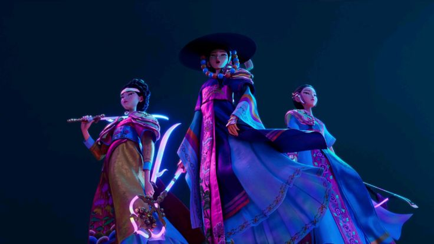
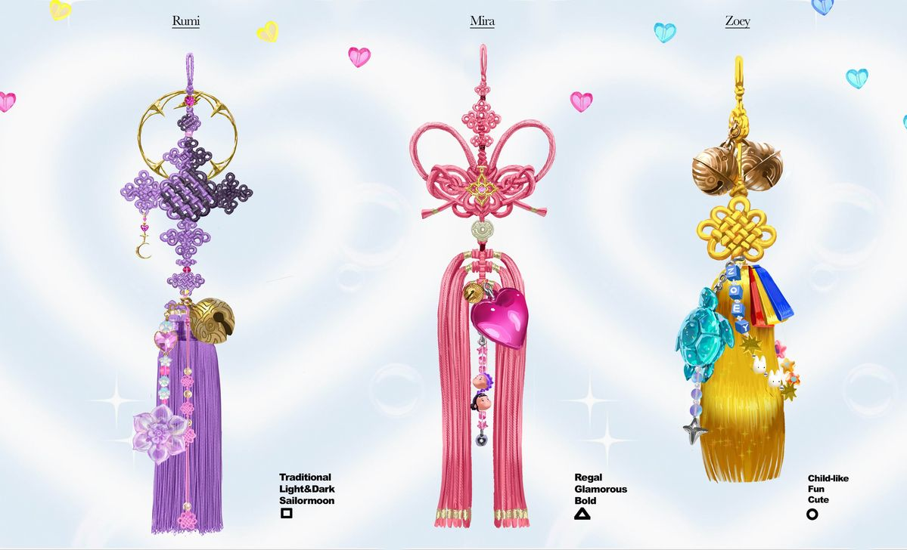
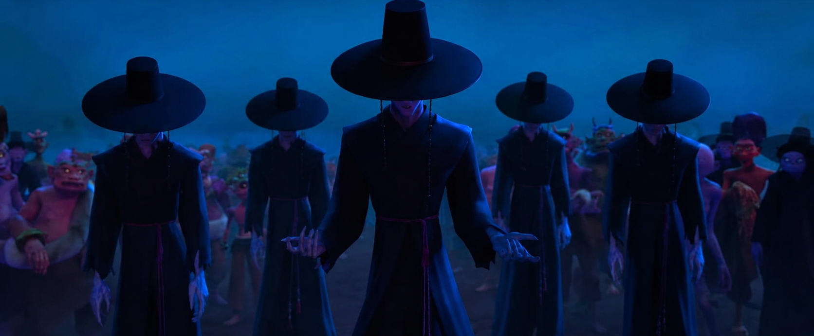

Discover traditional Korean clothing, accessories, weapons and folk art featured in K-pop Demon Hunters.

Hanbok is the traditional clothing of Korea. It is known for its elegant silhouette, vibrant colors and flowing lines.
Hanbok has been worn for centuries and became one of the most recognizable symbols of Korean culture.

Norigae is a traditional Korean ornament worn with the hanbok. It is usually attached to the ribbon of the skirt or jacket and symbolizes beauty, good fortune and prosperity.
Norigae became especially popular during the Joseon Dynasty (1392-1910). They were handcrafted from silk, jade, gold, silver and precious stones. Different designs represented wishes for happiness, longevity, fertility or protection from evil spirits.

The Gat is a traditional Korean hat made from woven horsehair and bamboo. It was mainly worn by scholars and noblemen to protect them from the sun while also representing dignity and social status.
The gat became an iconic symbol during the Joseon Dynasty. The shape and materials of the hat often reflected the wearer's rank and occupation. Today it remains one of the most recognizable symbols of traditional Korean clothing.
Hojak-do is a traditional Korean folk painting depicting a tiger and a magpie. The tiger represents strength and protection, while the magpie symbolizes good news and happiness.
These paintings became popular during the Joseon Dynasty as part of minhwa, Korean folk art. They were often displayed in homes to bring good fortune and ward off evil spirits.
A Gokdo is a traditional Korean curved sword designed for quick, powerful strikes. Its slightly curved blade makes it effective in close combat.
Curved swords appeared throughout Korean history, particularly during the Goryeo and Joseon periods. They were used by soldiers and cavalry and reflected the development of Korean sword-making techniques.
A Shinkal is a ceremonial sword associated with spiritual rituals and the protection against evil spirits. Unlike ordinary weapons, it represents purification and divine power.
Ritual swords have long been used in Korean shamanic traditions. They were believed to drive away evil, protect sacred spaces and assist in ceremonies performed by shamans.
The Saingeom is a legendary Korean ceremonial sword traditionally forged under specific astrological conditions. It symbolizes justice, protection and the defeat of evil.
According to Korean tradition, a true saingeom could only be forged during rare moments determined by the zodiac calendar. Because of this, these swords became powerful symbols of royal authority and spiritual protection.